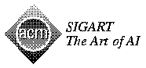

CMU Artificial Intelligence Repository


AI Organizations
-  ACM SIGART
ACM Special Interest Group on Artificial Intelligence
- ALU
Association of Lisp Users
- IJCAI
International Joint Conference on Artificial Intelligence
- AAAI
American Association for Artificial Intelligence
-
 ACL
ACL
Association for Computational Linguistics
- CogSci '95
Cognitive Science Society
- EACL
European Chapter of the Association for Computational Linguistics
- European Speech Communication Association (ESCA)
Maintained by Christian Benoit <benoit@icp.grenet.fr> or <esca@icp.grenet.fr>
- ELSNET
European Network of Excellence in Language and Speech
- SIGDAT
ACL Special Interest Group for Linguistic Data and Corpus-Based
Approaches to NLP
AI.Repository@cs.cmu.edu